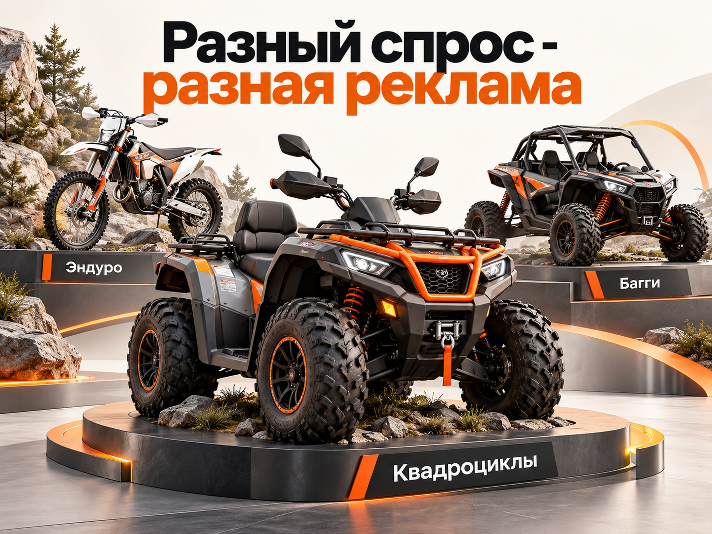
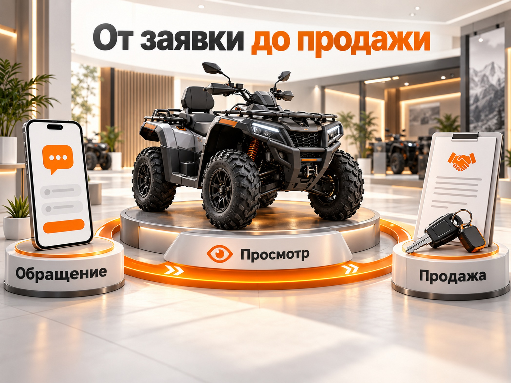
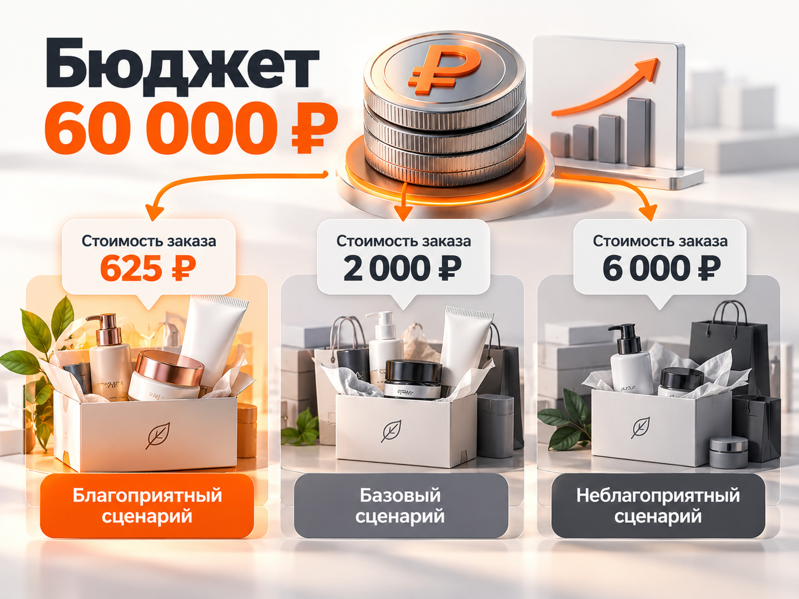

Блог о платном трафике
Продвижение мототехники: как продавать квадроциклы, эндуро и багги
Для продвижения мототехники в 2026 году я бы использовал два основных канала: Яндекс Директ для привлечения покупателей с уже сформированным спросом и Авито для продажи конкретных моделей из наличия. Если у магазина большой ассортимент, дополнительно стоит тестировать товарную рекламу Яндекса. РСЯ, ретаргетинг и продвижение на Картах помогают расширить охват и вернуть покупателей, которые пока выбирают технику.
Главная особенность этой ниши заключается в том, что квадроциклы, мотоциклы эндуро, питбайки и багги нельзя продвигать совершенно одинаково. У них разные аудитории, сценарии использования, стоимость и процесс выбора.
При этом оценивать эффективность рекламы только по количеству заявок неправильно. Человек может заинтересоваться моделью, позвонить, несколько раз посетить сайт и только после этого приехать в салон. Поэтому для полноценного прогноза нужно учитывать обращения, квалифицированных покупателей и фактические продажи.
Спрос на мототехнику в России в 2026 году
Рынок мотоциклов в России продолжает расти. По данным агентства «АВТОСТАТ», за январь - август 2026 года было реализовано около 47,5 тысячи новых мотоциклов, на 12,8% больше аналогичного периода 2025 года.
Среди популярных производителей в 2026 году фигурируют Regulmoto, Voge, Motoland, Racer и Rockot. Одной из наиболее продаваемых моделей остаётся Motoland XF300.
Но у этой статистики есть существенное ограничение. Она основана на регистрационных данных и не отражает весь рынок внедорожной техники. Значительная часть питбайков и спортивных мотоциклов не попадает в регистрационную статистику. Для квадроциклов и багги также нужны отдельные данные.
Поэтому рост продаж обычных мотоциклов нельзя автоматически переносить на все виды техники для активного отдыха.
Какие категории нужно продвигать отдельно
| Категория | Кто покупает | Что важно в рекламе |
|---|---|---|
| Квадроциклы | Любители бездорожья, владельцы загородной недвижимости, охотники, рыбаки | Проходимость, полный привод, грузоподъёмность, комплектация, надёжность |
| Эндуро | Любители внедорожной езды, новички и опытные райдеры | Вес, высота седла, двигатель, подвеска, доступность запчастей |
| Кроссовые мотоциклы | Любители мотокросса, спортивные райдеры | Назначение для трассы, технические характеристики, уровень подготовки |
| Питбайки | Начинающие райдеры, подростки и взрослые | Рост и возраст райдера, размер колёс, двигатель, цена |
| Багги и UTV | Покупатели техники для отдыха, экспедиций, хозяйственных задач | Число мест, безопасность, проходимость, комфорт, функциональность |
Кроссовый мотоцикл и туристический эндуро тоже нельзя считать одним товаром. Покупатели ищут их для разных задач, хотя названия могут пересекаться.
У квадроциклов есть ещё одно важное разделение: развлекательная техника для покатушек и утилитарная техника для перевозки грузов, хозяйства, охоты и поездок по сложной местности.
Вывод: структуру рекламы нужно строить не вокруг общего слова «мототехника», а вокруг конкретных категорий, задач покупателя и моделей, которые реально имеются в продаже.

Как сезонность влияет на продажу квадроциклов и мотоциклов
Сезонность является одним из главных факторов планирования рекламного бюджета мотосалона. Однако единого календаря для всей России и всех категорий техники не существует.
Для большинства летних направлений характерна следующая логика:
- Январь - февраль. Предварительный выбор техники, изучение моделей, поиск предложений к новому сезону.
- Март - апрель. Подготовка к мотосезону, рост интереса к покупке эндуро, питбайков и мотоциклов.
- Май - август. Активный период использования техники и спроса на доступные модели.
- Сентябрь - октябрь. Продажи техники для осеннего бездорожья, специальные предложения, распродажа отдельных остатков.
- Ноябрь - декабрь. Более выраженный сезонный спад по летним категориям, но сохраняется спрос на отдельные виды утилитарной техники.
Это ориентировочная модель, а не подтверждённое распределение продаж по каждому месяцу.
Квадроциклы могут использоваться значительно дольше обычного дорожного мотоцикла. В южных регионах сезон бездорожья отличается от северных. Если мотосалон одновременно продаёт снегоходы и мотобуксировщики, у бизнеса появляются дополнительные зимние направления.
Как проверить сезонность до запуска рекламы
Я бы начал с Яндекс Вордстата и сравнил динамику запросов за последние два года.
Проверять нужно не только общие фразы «купить квадроцикл» и «купить эндуро», но и более узкие:
- квадроцикл 500 кубов;
- квадроцикл для охоты;
- мотоцикл эндуро 300;
- питбайк 125;
- багги двухместный;
- конкретные марки и модели.
Сравнивать данные нужно отдельно по регионам, где магазин продаёт и доставляет технику.
Если спрос на определённые модели начинает увеличиваться в марте, нет смысла ждать мая, чтобы подготовить сайт, объявления и ассортимент.
При этом автоматически отключать всю рекламу зимой я бы не рекомендовал. Лучше уменьшать расходы на слабые категории и оставлять продвижение тех моделей, которые продолжают получать коммерческий спрос.
Какие рекламные каналы использовать для мототехники
Для продажи мототехники я бы распределил каналы по следующим приоритетам.
| Канал | Основная задача | Приоритет |
|---|---|---|
| Поиск Яндекса | Получать покупателей по коммерческим запросам и конкретным моделям | Высокий |
| Авито | Продавать отдельные модели из наличия, в том числе технику с пробегом | Высокий |
| Товарная реклама Яндекса | Показывать ассортимент, цены и конкретные предложения магазина | Высокий при наличии каталога |
| Яндекс Карты | Привлекать покупателей в физический мотосалон | Высокий для офлайн-дилера |
| РСЯ | Формировать дополнительный спрос и тестировать аудитории | После основных каналов |
| Ретаргетинг | Возвращать посетителей, которые смотрели технику, но не купили | После накопления аудитории |
| SEO и видеообзоры | Привлекать покупателей на этапе сравнения и выбора | Долгосрочный |
Не стоит запускать сразу все направления, если рекламный бюджет ограничен.
Для магазина с небольшим ассортиментом я бы начинал с поисковой рекламы и объявлений на Авито. Для крупного интернет-магазина с десятками или сотнями моделей товарная кампания может оказаться не менее важным инструментом.
Как настроить Яндекс Директ для продажи мототехники
Яндекс Директ подходит для работы с покупателями, которые уже определились с типом техники или конкретной моделью.
Самый ценный для старта сегмент - коммерческие запросы с понятным намерением купить.
Какие поисковые запросы использовать
Семантику я бы разделил на три группы.
1. Прямые коммерческие запросы.
Примеры:
- купить квадроцикл;
- квадроцикл 500 кубов купить;
- эндуро мотоцикл купить;
- кроссовый мотоцикл цена;
- купить питбайк 125;
- багги купить;
- мотосалон в [городе].
Это наиболее очевидный спрос. Человек уже ищет товар, а не просто интересуется темой.
2. Запросы по маркам и моделям.
Например, запросы с названиями Regulmoto, KAYO, Motoland, CFMOTO или конкретными моделями производителя.
Рекламировать нужно только те позиции, которые представлены в ассортименте либо доступны к поставке на понятных условиях.
В таком случае посетителя желательно вести сразу на карточку модели, где указаны цена, комплектация и наличие.
3. Запросы по назначению техники.
Например:
- квадроцикл для охоты;
- квадроцикл для рыбалки;
- эндуро для новичка;
- мотоцикл для бездорожья;
- багги для семейного отдыха.
У этих запросов намерение купить может быть менее выраженным. Человек ещё сравнивает варианты, поэтому посадочная должна помогать с выбором, а не просто предлагать оставить телефон.
Какие запросы исключать
В этой нише довольно легко получать клики от людей, которые вообще не собираются покупать технику.
Если магазин занимается исключительно продажей новых квадроциклов и мотоциклов, стоит проверять запросы со словами:
- прокат, аренда, покатушки;
- ремонт, своими руками, схема;
- запчасти, двигатель отдельно;
- б/у, с пробегом;
- обучение, мотошкола, соревнования.
Однако исключать такие слова нужно с учётом ассортимента и реальных поисковых запросов.
Например, «квадроцикл для охоты» может быть хорошим коммерческим запросом, а «прокат квадроциклов для охоты» уже не подходит магазину, который не предоставляет аренду.
Как организовать рекламные кампании
Я бы не создавал десятки отдельных кампаний по каждому бренду сразу после запуска.
Для небольшой точки продаж достаточно начать с кампании под наиболее востребованные категории и разделить внутри неё группы по товарному спросу.
При достаточном бюджете и накопленной статистике квадроциклы, эндуро и багги можно выделять в самостоятельные кампании. Это особенно полезно, если различаются маржинальность, география, сезонность и допустимая стоимость привлечения.
В режиме эксперта Яндекс Директа для этого подходит Единая перфоманс-кампания с поисковыми объявлениями и необходимыми настройками географии и условий показа.
Отдельного внимания требует геотаргетинг. Магазину с доставкой по России и физическим салоном в одном городе не стоит автоматически считать всех покупателей одинаковыми.
Нужно различать местные продажи с просмотром техники и дистанционные продажи в другие регионы. Проверять следует не только местонахождение пользователя, но и фактическую географию обращений и последующих продаж.
Какую стратегию выбрать
На старте я бы ориентировался на получение реальных обращений, а не сразу пытался оптимизировать кампанию по оплаченным продажам.
У дорогой мототехники количество завершённых покупок может быть небольшим. Если за неделю происходит одна продажа, алгоритму трудно обучаться исключительно на этой цели.
Яндекс рекомендует для товарных кампаний закладывать бюджет, достаточный минимум для десяти конверсий за неделю.
Поэтому на первом этапе можно использовать более частое, но качественное целевое действие: отправленную форму заявки, подтверждённый звонок или обращение по конкретной модели.
Клики по кнопке телефона, просмотры карточек и другие промежуточные действия лучше анализировать отдельно. Не нужно автоматически приравнивать их к настоящим покупателям.
Когда появятся данные из CRM, приоритет можно смещать в сторону квалифицированных обращений и продаж.
Товарная реклама Яндекса для большого ассортимента
Товарные кампании особенно интересны интернет-магазинам, у которых одновременно продаются десятки моделей квадроциклов, мотоциклов и аксессуаров.
Яндекс может автоматически формировать объявления на основе товаров, найденных на сайте, либо данных из товарного фида. Объявления могут появляться в Поиске, товарной галерее и РСЯ.
Для большого каталога я бы предпочёл YML-фид с актуальными сведениями о каждой позиции.
В нём важно передавать:
- полное название модели и производителя;
- правильную товарную категорию;
- актуальную цену;
- наличие;
- качественные фотографии;
- ссылку на соответствующую карточку товара;
- описание и характеристики.
Отдельно стоит проверять, какие модели выгодно рекламировать с учётом маржинальности. Высокая цена продажи не означает высокую прибыль для дилера.
Если квадроцикл продаётся за 600 тысяч рублей, но маржа небольшая, агрессивное продвижение может оказаться менее выгодным, чем реклама модели среднего ценового сегмента.
Когда лучше вести посетителя в каталог
Не всегда человеку нужна карточка одного конкретного мотоцикла.
Если он ищет «эндуро 300 кубов», возможно, он хочет сравнить несколько моделей. В таком случае страница категории с фильтрами, характеристиками и ценами может работать лучше отдельного товара.
Это подтверждает опубликованный в марте 2026 года кейс агентства MAKO.
Интернет-магазин электротранспорта, в ассортименте которого были квадроциклы, скутеры и велосипеды, использовал товарную рекламу. При переходе к продвижению страниц каталога вместо отдельных товаров доля рекламных расходов, по данным агентства, снизилась с 14% до 7% за две недели.
Это результат одного проекта по электротранспорту. Его нельзя автоматически считать нормой для бензиновых квадроциклов или мотоциклов.
Но сам принцип полезен: когда покупатель ещё сравнивает характеристики, каталог может оказаться более подходящей посадочной страницей.
РСЯ и ретаргетинг для мотосалона
В РСЯ я бы не начинал с максимально широкой аудитории людей, интересующихся автомобилями, путешествиями или активным отдыхом.
Интерес к приключениям ещё не означает готовности купить квадроцикл за несколько сотен тысяч рублей.
Лучше последовательно тестировать аудитории, связанные с конкретными категориями техники, и оценивать их по стоимости целевого обращения.
Особое внимание я бы уделил креативам.
Для этой ниши естественно использовать реальные фотографии мотоциклов и квадроциклов, съёмку на пересечённой местности, детали подвески, двигателя, колёс и комплектации.
Важно показывать именно ту модель, которую продаёт магазин. Искусственно созданные изображения несуществующих комплектаций могут привлечь внимание, но одновременно сформировать неверные ожидания.
В объявлениях можно тестировать предложения:
- «Квадроциклы в наличии. Доставка по РФ».
- «Эндуро для начинающих. Подберём по росту и опыту».
- «Багги для отдыха и бездорожья. Каталог моделей».
- «Квадроциклы с гарантией и сервисным обслуживанием».
Использовать эти формулировки стоит только при реальном наличии соответствующих условий у продавца.
Ретаргетинг по конкретной технике
Покупатель может несколько раз возвращаться на сайт и сравнивать модели перед приобретением.
Поэтому имеет смысл формировать аудитории посетителей, которые:
1. Открывали определённые товарные категории. 2. Смотрели карточки конкретных моделей. 3. Начали оформление заявки, но не завершили. 4. Ранее обращались в магазин, но ещё не купили технику.
Для разных групп нужны разные предложения.
Посетителю, который уже изучал конкретный квадроцикл, полезнее показать эту модель с актуальными условиями покупки, чем общий баннер «Мототехника по выгодным ценам».
После продажи покупателя желательно исключать из рекламы приобретения той же техники, если дополнительное предложение ему не подходит.
Как продавать квадроциклы и мотоциклы через Авито
Авито я считаю одним из основных каналов, который стоит проверить для продавца мототехники.
Здесь покупатель может выбирать не только категорию или бренд, но и конкретное предложение с фотографиями, ценой, местоположением продавца и состоянием техники.
Особенно важно разделять новые модели и технику с пробегом.
Для профессионального дилера объявление должно содержать максимально понятную информацию:
- точное название модели;
- состояние и год выпуска;
- актуальную цену;
- реальные фотографии;
- характеристики;
- сведения о наличии;
- документы и условия оформления, применимые к технике;
- доступные способы доставки и оплаты.
Фотографии лучше делать самостоятельно, показывая реальный товар с разных ракурсов.
Для дорогой техники полезны отдельные изображения двигателя, колёс, подвески, приборной панели и комплектации.
Реальный кейс Авито: «Рольф Мото», 2026 год
В сентябре 2026 года AdIndex опубликовал кейс агентства «4 пикселя» и дилера «Рольф Мото Юго-Восток».
Рекламная кампания проводилась в январе 2026 года. Продвигали мотоциклы и квадроциклы через «Авито Промо».
Основное внимание уделили объявлениям, которые уже получали хороший отклик, а также карточкам с обновлёнными фотографиями. Продвижением управляли вручную.
Результаты за месяц:
| Показатель | Результат |
|---|---|
| Просмотры | 20 200 |
| Контакты | 138 |
| Средняя стоимость контакта | 941,4 ₽ |
| Целевые звонки | 60 |
| Рост количества контактов | +42,3% |
| Рост целевых звонков | +46,3% |
Показатели относятся к конкретному дилеру в Москве. Контакт на Авито не равен подтверждённой продаже, а целевые звонки не следует автоматически прибавлять к общему числу контактов.
Тем не менее кейс показывает, что Авито может быть полноценным каналом привлечения покупателей мототехники даже вне основного летнего сезона.
Я бы использовал для Авито отдельную аналитику: количество контактов, стоимость обращения, качество покупателей и число завершённых сделок.
Сравнивать Авито с Яндекс Директом нужно по одинаковым бизнес-показателям, а не только по ценам контакта и клика.
Подробнее о различиях этих каналов я рассказывал в статье «Авито или Яндекс Директ».
Каким должен быть сайт для продажи мототехники
Для продвижения дорогой мототехники недостаточно красивой главной страницы и кнопки «Заказать звонок».
Я бы сделал основой сайта полноценный каталог с отдельными категориями квадроциклов, эндуро, питбайков и багги.
У посетителя должна быть возможность быстро найти подходящие варианты и сравнить их между собой.
Что обязательно показывать в карточке товара
Для квадроцикла это могут быть тип двигателя, объём, мощность, привод, коробка передач, подвеска, допустимая нагрузка и комплектация.
Для мотоцикла эндуро особенно важны высота седла, масса, размер колёс, двигатель и назначение модели.
Для багги следует отдельно показывать количество мест, габариты, характеристики трансмиссии и оснащение.
Помимо характеристик я бы обязательно добавил:
- реальные фотографии и видео;
- актуальную цену и наличие;
- гарантийные условия;
- информацию о сервисе и запчастях;
- возможность сравнить модели;
- условия доставки;
- понятный способ связи с продавцом.
Если модель нужно привозить под заказ, об этом следует сообщать прямо в карточке товара. Указывать «в наличии», когда техника фактически отсутствует, не стоит.
Какие формы обращения использовать
Для этой ниши я бы протестировал несколько осмысленных действий: «Уточнить наличие», «Получить консультацию по модели», «Записаться на просмотр» и «Узнать условия доставки».
Если покупатель находится в другом регионе, ему можно предложить дистанционную видеоконсультацию с демонстрацией конкретной модели.
Не нужно требовать слишком много данных при первом обращении. Имени и контакта часто достаточно, чтобы начать разговор и уточнить параметры техники.
При этом посетитель должен понимать, по какой модели с ним свяжется менеджер.
Как учитывать продажу мототехники после заявки
Для мотосалона особенно важна связь между рекламой, обращением и продажей.
Покупатель может найти квадроцикл в Яндексе, затем приехать в салон и оформить покупку. Если учитывать только отправленные формы на сайте, такая сделка может вообще не попасть в рекламную статистику.
Поэтому для оценки результата я бы разделял следующие этапы:
1. Обращение. Покупатель оставил заявку, написал сообщение или совершил звонок. 2. Квалифицированный лид. Менеджер подтвердил интерес к конкретной технике, возможность покупки и соответствие предложения запросу. 3. Просмотр или консультация. Покупатель приехал в салон либо получил полноценную дистанционную консультацию. 4. Бронирование. Покупатель подтвердил намерение приобрести модель, если такой этап предусмотрен процессом продаж. 5. Продажа. Сделка завершена и зафиксирована в CRM.
Именно на последнем этапе становится понятно, сколько фактически стоит привлечение покупателя.

Если магазин использует CRM, можно передавать в Метрику статусы обращений и сделок. Яндекс поддерживает загрузку офлайн-конверсий, в том числе для покупок после визита в физический магазин.
При небольшом количестве продаж не обязательно сразу оптимизировать рекламу по самой глубокой цели. Для начала достаточно собирать эти данные и анализировать, какие источники приводят качественные обращения.
Подробнее о механике передачи статусов есть в статье «Офлайн-конверсии в Яндекс Директ и Метрике».
Реальные результаты рекламы мототехники в 2026 году
Сравним три опубликованных проекта, в которых продвигали мототехнику или близкие товарные категории.
| Кейс | Период | Подтверждённый результат |
|---|---|---|
| «Рольф Мото», Авито | Январь 2026 | 138 контактов по 941,4 ₽, 60 целевых звонков |
| «Синапс», мотосалон | Декабрь 2025 - июль 2026 | 197 целевых действий за полгода |
| MAKO, магазин электротранспорта | Кейс опубликован в марте 2026 | Снижение ДРР с 14% до 7% за две недели после изменения товарной рекламы |
Что показывают эти кейсы
В проекте агентства «Синапс» продвигали мотосалон с двумя торговыми точками в Вологде и Череповце. В ассортименте были мотоциклы, квадроциклы, снегоходы и другие категории.
На запуске использовали поисковую рекламу и учитывали сезонность ассортимента. В опубликованном кейсе указан бюджет около 20 тысяч рублей в месяц.
За полгода получено 197 конверсий. Однако авторы прямо уточняют, что считали различные целевые действия на сайте и не смогли достоверно определить число продаж с рекламы.
Поэтому делить рекламные расходы на эти конверсии и объявлять результат средней стоимостью реального покупателя было бы некорректно.
В кейсе «Рольф Мото» известна стоимость контакта на Авито, но не раскрыта полноценная экономика заключённых сделок.
В проекте MAKO удалось существенно сократить долю рекламных расходов, но речь шла о магазине электротранспорта, а не исключительно о квадроциклах с двигателями внутреннего сгорания.
Общий вывод: свежие кейсы подтверждают применимость поиска, Авито и товарной рекламы для мототехники. Однако открытых данных недостаточно, чтобы назвать достоверный среднерыночный CPL или стоимость продажи квадроцикла в России за 2026 год.
Эти показатели нужно рассчитывать для конкретного ассортимента и региона.
Сколько денег нужно на рекламу мототехники: прогноз
Бюджет на продвижение мотосалона следует рассчитывать от запланированных продаж и допустимой стоимости привлечения клиента.
Фиксированной суммы, одинаково подходящей магазину эндуро в небольшом городе и федеральному продавцу дорогих квадроциклов, не существует.
На размер бюджета влияют география, конкуренция, ассортимент, цена клика, конверсия сайта и работа отдела продаж.
Пример расчёта на четыре продажи в месяц
Рассмотрим условный мотосалон, продающий квадроциклы и эндуро. Все значения ниже являются допущениями для расчёта, а не средними показателями российского рынка.
| Показатель | Принято для расчёта |
|---|---|
| План продаж с рекламы | 4 единицы в месяц |
| Средняя цена клика | 72 ₽ |
| Конверсия клика в обращение | 4% |
| Доля квалифицированных обращений | 70% |
| Конверсия всех обращений в продажу | 8% |
| Расходы на ведение рекламы | 30 000 ₽ в месяц |
При таких исходных данных для четырёх продаж потребуется 50 обращений.
Если одно обращение формируется из 25 оплаченных кликов, стоимость заявки составит:
72 ₽ / 4% = 1 800 ₽.
Для получения 50 обращений потребуется:
50 × 1 800 ₽ = 90 000 ₽ рекламного бюджета.
Из 50 обращений при доле квалификации 70% получится около 35 потенциальных покупателей, соответствующих требованиям магазина.
При конверсии всех обращений в продажу 8% расчётный результат составит четыре продажи.
В итоге:
| Показатель | Расчётный результат |
|---|---|
| Рекламный бюджет | 90 000 ₽ |
| Оплаченные клики | 1 250 |
| Обращения | 50 |
| Квалифицированные обращения | 35 |
| Продажи | 4 |
| Стоимость обращения | 1 800 ₽ |
| Стоимость продажи по рекламным расходам | 22 500 ₽ |

Это модель возможной воронки, а не обещание получить четыре продажи при бюджете 90 тысяч рублей.
Фактические показатели могут существенно отличаться. Перед запуском нужно проверять стоимость трафика в выбранных регионах через прогноз бюджета Яндекс Директа и тестовые кампании.
Как определить допустимую стоимость продажи
Одного расчёта рекламного бюджета недостаточно. Нужно проверить, насколько такая реклама выгодна бизнесу.
Допустим, после закупочной стоимости техники и непосредственно связанных с продажей переменных расходов магазин получает 45 000 ₽ с каждой проданной единицы до затрат на маркетинг.
При этом собственник хочет сохранять не менее 15 000 ₽ с продажи на покрытие постоянных расходов и прибыль.
Значит, максимальный совокупный расход на привлечение продажи составит 30 000 ₽.
Если мотосалон продаёт с рекламы четыре единицы в месяц, а ведение кампаний стоит 30 000 ₽, на каждую продажу приходится ещё 7 500 ₽ затрат на специалиста.
Тогда допустимые рекламные расходы на одну продажу:
30 000‑7 500 = 22 500 ₽.
Это совпадает с рассчитанной выше стоимостью продажи по рекламе.
Таким образом, при исходных допущениях бюджет 90 000 ₽ на рекламу и 30 000 ₽ на её ведение соответствует целевой экономике четырёх продаж.
Расходы на сайт, дополнительные сервисы, налоги и другие неучтённые затраты в этом примере не включены. В реальном проекте их также необходимо заложить в экономику.
Как рассчитать максимально допустимый CPL
Если магазин знает стоимость привлечения продажи, можно определить предельную стоимость обычного обращения.
Формула:
Допустимый CPL = допустимые рекламные расходы на продажу × конверсия обращения в продажу.
Для рассмотренного примера:
22 500 × 8% = 1 800 ₽ за обращение.
Если фактический CPL составит 2 500 ₽ при той же конверсии в продажу, реклама перестанет укладываться в установленную экономику.
Но это не означает, что любое обращение дороже 1 800 ₽ нужно отключать. Например, покупатели дорогих багги могут приносить магазину другую маржу, поэтому допустимая стоимость их привлечения будет отличаться.
Поэтому я рекомендую рассчитывать рекламную экономику по основным товарным категориям, а не по всему мотосалону одной общей цифрой.
Что делать, если заявки есть, а техника не продаётся
В мототехнике проблема не всегда находится в Яндекс Директе или Авито.
Если обращения поступают, но продаж мало, сначала нужно выяснить причину.
Нецелевые обращения. Например, рекламируется новый квадроцикл, а пользователи ищут дешёвую технику с пробегом или аренду.
Нет нужной модели. Пользователь видит объявление, приезжает в салон, но выбранной техники нет в наличии.
Не устраивают условия. Покупатель сравнил цену, доставку, гарантию и комплектацию с конкурентами и выбрал другое предложение.
Слабая обработка обращений. Менеджер не отвечает на звонок, долго обрабатывает заявку или не предлагает подходящую альтернативу.
Не учитываются отложенные покупки. Клиент мог вернуться и купить технику спустя несколько недель, но продажу не связали с первоначальным рекламным обращением.
Поэтому я бы смотрел не только отчёты Директа и Метрики, но и реальные статусы заявок в CRM.
Особенно важно отдельно анализировать обращения по категориям. У квадроциклов, эндуро и багги могут значительно отличаться качество лидов, сроки принятия решения и конверсия в продажу.
Как продвигать мотосалон в Яндекс Картах
Для магазина с физическим шоурумом присутствие на Картах может быть важным дополнением к рекламе сайта.
Покупатели дорогой техники нередко хотят посмотреть квадроцикл или мотоцикл перед оплатой, оценить посадку, комплектацию и качество сборки.
Карточку организации следует подробно заполнить: адрес, график, телефон, фотографии салона, ассортимент, услуги, отзывы и способы связи.
Если магазин предлагает сервисное обслуживание, предпродажную подготовку или возможность просмотра техники, эти сведения тоже стоит указать.
Платное продвижение организации в Яндексе имеет смысл оценивать по обращениям, маршрутам и фактическим посещениям салона, насколько позволяют данные аналитики.
Нельзя считать каждое построение маршрута гарантированной продажей.
Дополнительное продвижение: SEO и видеообзоры
Для дорогой мототехники полезен контент, который помогает покупателю сравнить несколько моделей и определиться с выбором.
Например:
- какой квадроцикл выбрать для охоты и рыбалки;
- чем отличается эндуро от кроссового мотоцикла;
- какой эндуро подойдёт начинающему;
- сравнение двух конкретных квадроциклов;
- особенности обслуживания выбранной модели.
Такие материалы можно размещать на сайте и использовать в видеоформате, в том числе в VK Видео и на других подходящих площадках.
Но я бы не подменял ими рекламу сформированного спроса. Контент и поисковое SEO решают более долгосрочную задачу: помогают покупателю разобраться с выбором и сформировать доверие к магазину.
Видео с реальной техникой также можно использовать в карточках товаров, социальных сетях и консультациях менеджеров.
Пошаговый план продвижения мототехники
Для нового проекта я бы придерживался следующего порядка.
Шаг 1. Изучить ассортимент и экономику.
Определить основные категории, наличие, маржу, географию продаж и возможности доставки.
Шаг 2. Проверить поисковый спрос.
Через Вордстат изучить категории, марки, модели и сезонность по регионам. Дополнительно проверить предложения конкурентов в Яндексе и на Авито.
Шаг 3. Подготовить сайт и карточки товаров.
Проверить цены, наличие, фотографии, характеристики, формы, телефон и мобильную версию каталога.
Шаг 4. Настроить аналитику.
Подключить Метрику, отслеживание форм, звонков и обращений. По возможности обеспечить передачу статусов из CRM.
Шаг 5. Запустить основную рекламу.
Начать с коммерческих запросов на Поиске Яндекса. Параллельно проверить Авито по конкретным моделям из ассортимента. При большом каталоге протестировать товарную кампанию.
Шаг 6. Проверить качество обращений.
Отдельно смотреть целевые и нецелевые лиды, стоимость квалифицированного обращения и продажи по категориям.
Шаг 7. Расширять работающие направления.
После получения статистики подключать новые категории, ретаргетинг, РСЯ и дополнительные регионы, если экономика позволяет масштабирование.
Итог: как эффективнее продавать мототехнику в 2026 году
Для продажи квадроциклов, мотоциклов эндуро, питбайков и багги я бы начинал с рекламы конкретного ассортимента в Яндекс Директе и на Авито. При большом каталоге добавлял бы товарные кампании, а для физического мотосалона отдельно развивал присутствие на Яндекс Картах.
При этом ключевой фактор эффективности не сам рекламный канал, а правильная связка между товаром, покупательским спросом, посадочной страницей и обработкой обращений.
Сезонность нужно оценивать по отдельным категориям и регионам. Квадроциклы и эндуро не обязательно продаются по одинаковому календарю, а багги могут иметь совершенно другую экономику привлечения.
Если планируется реклама с конкретным бюджетом, прогноз нужно строить от допустимой стоимости продажи, а не от абстрактной средней цены заявки по рынку.
Я занимаюсь настройкой и ведением Яндекс Директа, анализом рекламной экономики и качества обращений. Помогаю выстраивать рекламу с учётом сайта, аналитики и фактических продаж. Подробнее об условиях работы и примерах проектов можно узнать на naklikay.ru.